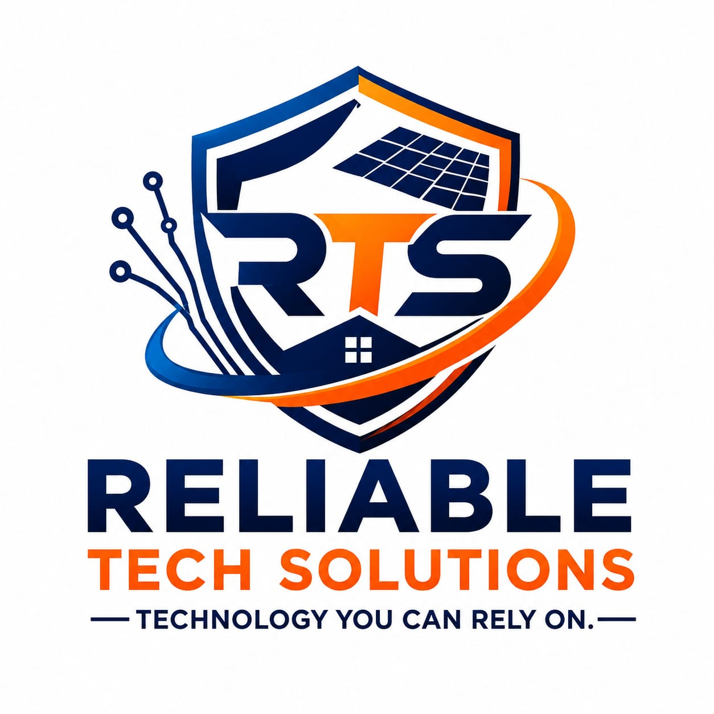

Reliable Tech Solutions (RTS) is a Kenya-based technology and technical solutions company providing electronic products and professional installation and maintenance services.
We support homes, businesses and institutions with practical solutions across IT, CCTV and security, electrical systems, solar energy, backup power and related technologies.
Work with RTS
To provide practical, dependable technology and technical solutions that help customers operate with confidence.
To be a trusted technology and technical solutions partner for customers across Kenya.
Reliability, integrity, professionalism, innovation, customer satisfaction and quality.